Overview
ps
Personality
Griffith has always carried himself in a well-mannered, exemplary fashion almost indistinguishable from that of nobility; his mannerisms, coupled with his keen intellect, often leave people astounded at his humble origins.His most notable trait, however, is his otherworldly charisma. Leadership has always come naturally to him. Those who choose to follow Griffith typically are overcome with emotions upon their first encounter with him, either entranced by the thought of splendor and grandeur at his side, or reeled in by his strong sense of ambition and conviction.
Even as a child, Griffith's strong sense of self and ambition were apparent. It is in the back alleys of his childhood city where he first sets hissights on acquiring his own kingdom. He has a multi-faceted demeanor during the earlier years of the band, at times appearing carefree, and almost child-like, while other times demonstrating ferocious killing intent and deadliness.This juxtaposition of undeniable distinction and common-born idiosyncrasies is what attracts people of varying walks of life to his mercenary band. In spite of his large following, in his earlier years, Griffith's ego is never noticeably inflated; after one of the Band of the Falcon's earlier skirmishes, he even takes the time to lament the death of a ten-year-old Falcon-in-training, remembering the boy's name and expressing regret over compelling the young soldier to join his cause.
The deaths of those fighting for his dream take a toll on him, however. In order to cope with the loss of them and ensure their deaths aren't in vain, Griffith begins relying on cold logic and reasoning, placing higher precedence on success than compassion – paradoxically expressing compassion for his comrades by suppressing it. It is not long before he is completely apathetic to his comrades' deaths. Even then, he still possesses his humanity, and questions his immoral schemes, at one point inquiring of Guts if he is a cruel person. The high esteem to which he is held does eventually have an effect on his ego, however. Despite the affection he displays towards his comrades, Griffith comes to believe they are beneath him nonetheless, considering them nothing more than tools for achieving his dream, with none of them fitting his criteria of a true friend.
Among the tens of thousands of allies and enemies he encounters, Guts is the only one who manages to stifle Griffith's ambition and make him forget about his dream. He explicitly displays care for Guts, on several occasions risking his life to save the swordsman, and even losing his composure upon Guts' endangerment. It is because of this that his ego crumbles after Guts' departure; so accustomed to seizing all of his desires, Griffith forgoes all logical reasoning upon losing his most treasured soldier, throwing away all he has achieved, and endangering the Band of the Falcon after suffering merely one loss. When he invokes the Eclipse and is presented with a reflection of his true self, he comes to terms with who he sees – a martyr to the god named "dream", first and foremost – and accepts the consequences of his ambition.
Griffith's rebirth as Femto brings about the crystallization of his ambition, rendering him undeterred by moral inhibitions and focused solely on the realization of his dream He has stated that, save for the residual feelings of his infant vessel, he is now "free" – his heart frozen as a member of the God Hand. As a consequence of his ascension, Midlanders often remark that Griffith now possesses an untouchable, inhuman presence. Regardless, Femto is still, in essence, pre-Eclipse Griffith, devoid only of some fundamental human emotions while still possessing his memories, ambition, and ego.
ey
Early Years
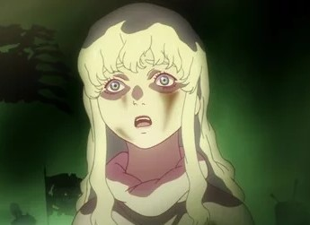Unfeathering Reality
A child of humble birth, in his youth, Griffith is stricken with poverty, to the point where he at times can't even afford a slice of bread. In the cobblestone streets of alleyways, he plays with his fellow street urchins, procuring junk trinkets and calling them victories. Griffith's ambition proves to be higher than that of the other children, however; in the afternoons, with the sunlight blocked out by towering brothels and pubs, he gazes up at the sun-coated castle of the city he resides in. It is in these streets where Griffith decides that the acquisition of his own kingdom will be his real victory. He eventually receives his Crimson Beherit in these same streets from an old, gypsy fortune teller, who foretells his conquest of the world. In his adolescence, he forms the Band of the Falcon, including the miner Pippin, former bandit Corkus, and tumbler Judeau.
While still collecting war funds for his small group, Griffith comes across a distressed 12-year-old Casca struggling to free herself from the clutches of a lustful nobleman. He interrupts the confrontation and slices the assailant's ear off, displeased with the latter's elitist nobility. Rather than kill the would-be rapist himself, he throws Casca his sword and instructs her to wield it if she has something to protect.
With the nobleman's death and Casca's newfound devotion, Griffith tells her she is free to do as she pleases, with the girl promptly joining his ranks afterwards. The Band of the Falcon's big break comes when they find themselves under the employ of the wealthy Tudor feudal lord Gennon. Realizing the perverted nobleman fancies him, and that Gennon poses a faster, safer route to amassing and funding an army, Griffith sells his body to the man in exchange for a substantial fortune to give his Falcons a better chance of survival.
gac
Golden Age Arc
Meeting Guts
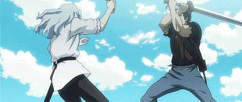 Years later, the Band of the Falcon finds itself contracted with the defense of a military garrison from a series of mercenary attacks. For three months, the Falcons are able to hold out in the fort, but with the defeat of Bazuso at the hands a young mercenary named Guts, and the subsequent blow to the garrison soldiers' morale, the Falcons relinquish control of the fort to the enemy and abandon their post.
A day later, the Falcons catch sight of Guts walking on a trail near their encampment, a few of which decide to pursue him in hopes of taking his recently acquired reward. One after another, they fall victim to Guts' dominance. Eventually, Casca, too, finds herself at the mercy of the mercenary; with his then closest confidant in danger, Griffith finally dons his armor and arrives to the scene, intercepting Guts' attack with a spear. He attempts to reason with Guts, but to no avail, left only with the option of dismantling and incapacitating the swordsman. With his interest piqued, Griffith has Guts taken to the Falcons' nearby encampment and orders Casca to lie with the injured mercenary to provide him with warmth.
When Guts finally awakens, Griffith attempts to enlist him, an offer which Guts firmly refuses. Lustful for vengeance, Guts gives Griffith a choice: if he can defeat Guts in sword combat, he can claim ownership of the mercenary; if he loses, however, he'll be granted a wound similar to that which he dealt Guts days before. Not one to avoid the forceful acquisition of things he desires, Griffith agrees to Guts' terms and engages him in combat. Ultimately outmaneuvering his opponent, Griffith dislocates Guts' arm and claims the swordsman for himself as a newly enlisted member of his mercenary band.
Crimson Prophecy
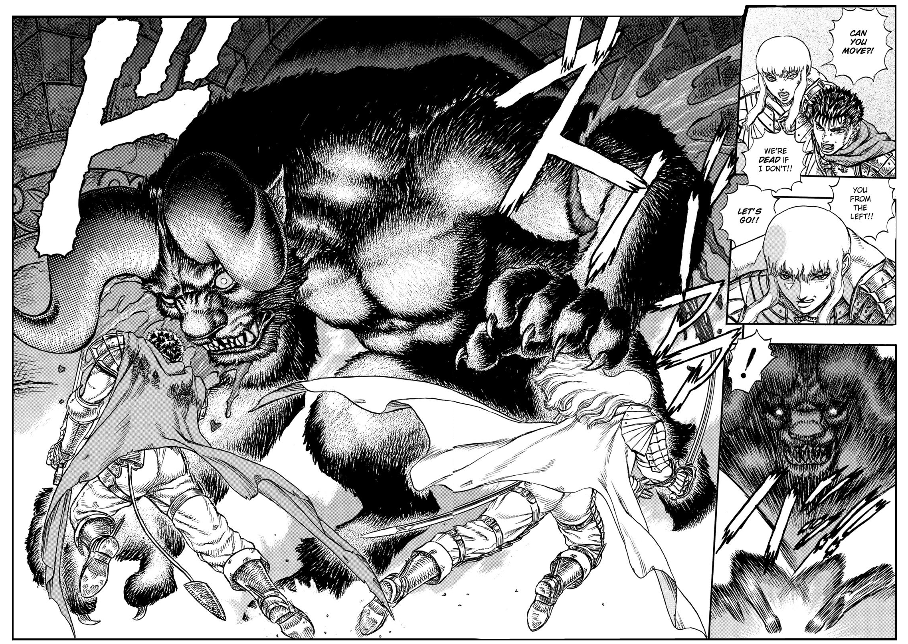Three years later, when the Band of the Falcon successfully defends the Midland army against the Black Ram Iron Lance heavy cavalry's attack, they are enlisted by the kingdom full-time in its century-spanning war against Tudor. As a reward for his valiant defensive efforts, Griffith is knighted by the King of Midland and granted the title of viscount, at long last obtaining a peerage among the Midland nobility and taking one step closer to realizing his dream.In the midst of seizing a Tudor stronghold, Griffith is informed of a powerful enemy leader holding back the final push into the inner citadel.He and his forces venture towards the fortress to inspect the situation, narrowly arriving in time to free Guts from the clutches of the apostle Zodd.
Ordering his men to fall back as Zodd slaughters the Falcons for their interference, Griffith slyly makes his way to Guts to carry him to safety. However, Zodd blocks their path and the two are forced to execute a pincer strike on him, with Griffith successfully severing the beast's arm. An enraged Zodd retaliates by tail whipping Griffith into a nearby pillar, knocking the White Falcon unconscious. As the demon goes in for the kill, he spots Griffith's dangling beherit, shocked to see that someone such as Griffith possesses the fabled "Egg of the King". Consequently, Zodd stays his hand and departs, leaving Guts with a cryptic prophecy warning of an inescapable doom which will befall him should Griffith's dream ever collapse.Taken back to Wyndham to have his wounds tended to, having made allies and enemies alike within the Midland aristocracy, Griffith recuperates and visits Guts on a castle terrace where the latter is training. He begins to muse over their encounter with Zodd, using it as evidence of things beyond human understanding. Following Griffith's reflection, Guts asks why he would risk his life on a mere soldier's behalf; amused by the question, Griffith responds with one of his own, asking if he's truly obliged to provide a reason every time he risks his life for Guts.
Snake Skin
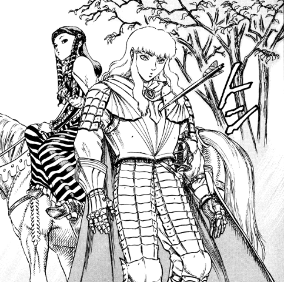
Thereafter, they are met by the King of Midland and his brother Julius, leader of the White Dragon Knights. Griffith is soon after introduced to the king's timid daughter, Princess Charlotte, catching her as she trips walking down the terrace steps. Upon breaking her fall, Griffith is slapped by Julius for making contact with the princess, to which Griffith apologizes for his actions with utmost insincerity.
During the Autumn Hunt, in which the Falcons act as the king's guard, Griffith discusses with Charlotte the depravity of men and teaches her how to use a leaf as a reed. A wild boar then springs out from the nearby foliage, startling Charlotte's horse as she and Griffith are separated from the hunting party. Upon saving Charlotte and calming her horse, Griffith is shot with a crossbow from the distant undergrowth. His beherit, however, shields him from what he realizes to be a poisoned arrow. Noticing the lethality and costliness of the employed poison, Griffith concludes it to be the doing of Julius, keenly watching as the knight departs in the distance.
Dangerous Game
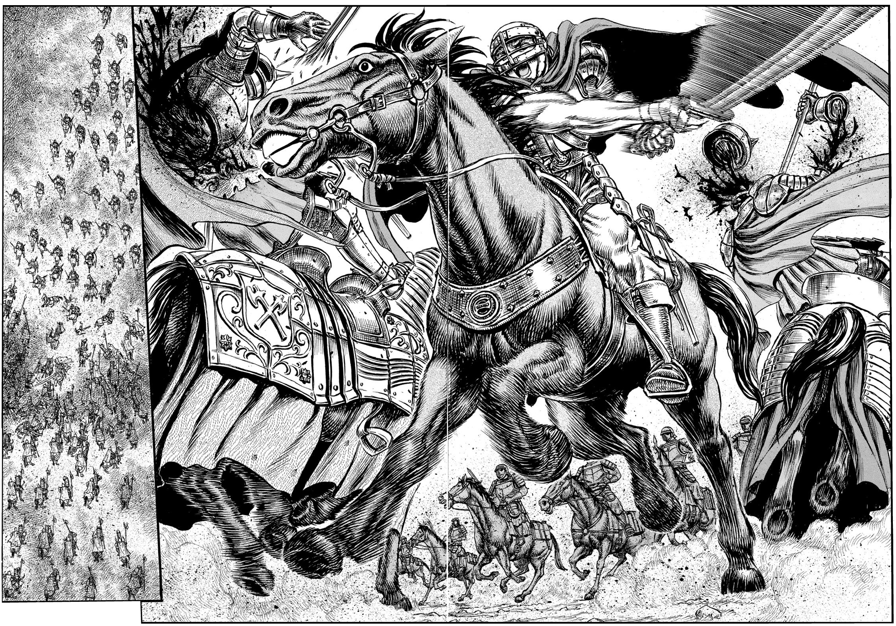The Band of the Falcon soon sets out to combat the Blue Whale Knights of Tudor. In the closing moments of the skirmish, Griffith is notified of Guts and Casca's fall from a cliff edge. Noblemen on the field caution him not to send soldiers provided by the king in search of merely two Falcons. In spite of their advice, Griffith sends a party, arguing that Guts and Casca are key members of the Band of the Falcon he does not intend to lose.
In a war council meeting following the Falcons' victory, military officials, including Griffith himself, attempt to formulate a strategy for reclaiming the stronghold of Doldrey, overseen by Gennon in light of Tudor's civil war. One after another, the officials shoot down ideas, until Griffith's opinion is asked for; he succinctly states he would reclaim the stronghold if ordered to by the king, much to the surprise of the other officials. In the midst of their bickering, the king asks Griffith if his claim was sincere, reminding him even Midland's strongest force, the White Tiger Knights, couldn't achieve such a feat. Griffith reassures the king that a large force is unnecessary, as he only requires the Band of the Falcon. Convinced by Griffith's confidence, the king orders the Falcons to recapture Doldrey.
Alexandred
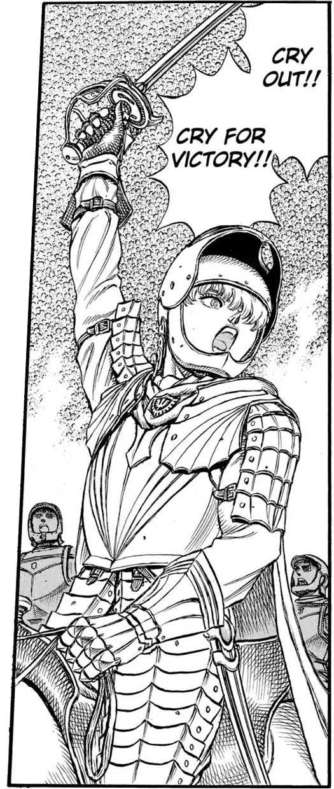Griffith assembles his Falcons in the dust field of Doldrey, splitting his forces into two: one group accompanying him and Guts to lure the Purple Rhino Knights and various other Tudor armies towards the river, and the other an infiltration force led by Casca to retake Doldrey itself. In the heat of the battle, Griffith catches sight of Guts' duel with Boscogn, slowly filling with trepidation as Guts gradually loses his edge in the fight. Just as Guts' chances of survival dwindle, a replacement sword suddenly lands before him. A slightly panicked Griffith instructs Guts to take up the sword, subsequently witnessing the beheading of Boscogn. Shortly after, the Purple Rhino Knights look to their rear to see a recaptured Doldrey, now under the Falcons' hold.
Having dealt a huge blow to the enemy's morale, Griffith orders his Falcons to slaughter all who provide further opposition. As remnants of Tudor's forces scatter and the battle ends, Griffith approaches a trampled Governor Gennon, who had entered the fray earlier in hopes of seizing Griffith for himself. As Gennon begs for another night of pleasure with the Falcon, Griffith informs the governor that he bears no feelings whatsoever for him, as he was merely a method of ascension. He then proceeds to pierce Gennon in the skull, so as to not inconvenience himself with the potential spreading of petty rumors.
Tombstone of Flames
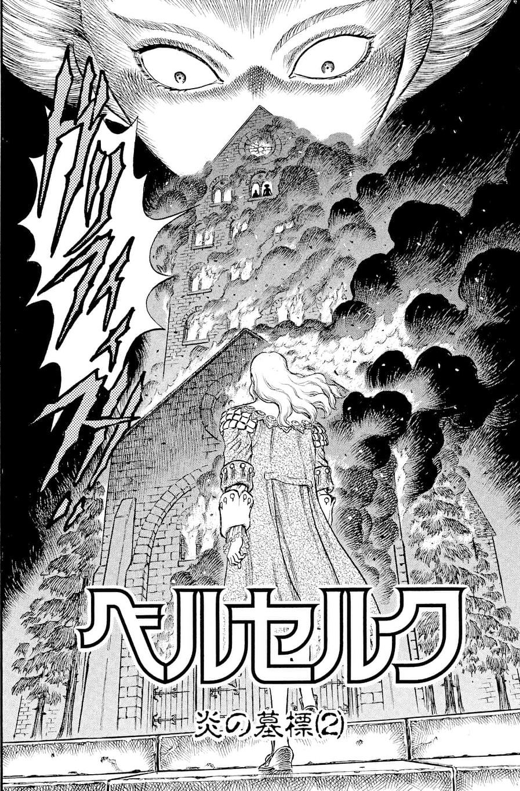The Band of the Falcon receives a profusion of praise from the Midland citizens and officials alike upon their victorious return, and a victory ball is held in celebration. Before attending the party, however, Griffith concocts a scheme to do away with all his political enemies in one strike, abducting Foss' daughter in order to gain the minister's compliance, and sending an order for Foss to gather all court members bearing ill will towards him in one place. Cognizant of the Queen of Midland's plan to poison his drink, he has his goblet spiked with a specific nostrum to temporarily fake his death, so as to give his enemies a false sense of success. At the ball, the king proclaims the Hundred-Year War's end, rewarding the Band of the Falcon with the title of White Phoenix Knights and bestowing the title of White Phoenix General to Griffith. With the initiation of a toast, Griffith sips from his goblet and falls to the ground.
Once the nostrum's effects wear off, Griffith locks his political enemies in the tower they have gathered in to celebrate his apparent demise and has it set alight. The queen approaches the window of the tower room and, to her dismay, sees Griffith standing before the tower as flames engulf it. Griffith reminds his enemies they are still at war and that the battlefield offers no spectator seats, before leaving to rendezvous with Foss nearby. Foss, curious as to how Griffith knew of the ploy, asks why he was chosen to help in the scheme. Griffith reminisces over the first time they met, informing Foss that the fear in his eyes that day gave away his malicious intent. With the issue resolved, Griffith returns Foss' daughter to him, expressing hope for friendlier relations between them in the future. After paying off the girl's abductors, Griffith has Guts tie up the remaining loose ends in his scheme by murdering the criminals. Before returning to his comrades, he begins to question whether he himself is cruel. Guts reminds him that schemes such as his most recent one are merely a part of achieving his dream, to which Griffith agrees.
Broken Wings
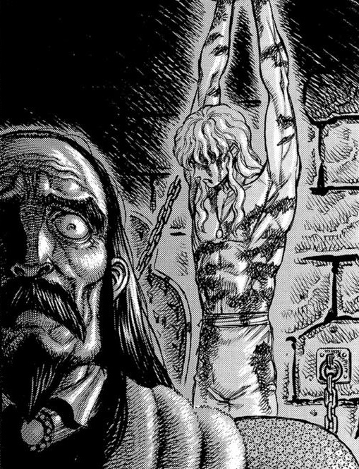One month later, Griffith is notified of Guts' withdrawal from the band. He intercepts Guts and resolves to duel the swordsman for his freedom, as he did three years prior. As the two ready their stances, for the first time in years, Griffith displays a lack of composure. He lunges after Guts, having decided if he can't have Guts then no one else will. However, his parry technique is countered and his blade broken into two. Griffith is then left to lament his loss as Guts decisively leaves the Falcons.
Defeated and distraught, Griffith seeks out Charlotte on the night of Guts' departure. He seduces and beds her, leaving the morning after. Consequently, outside of the palace, Griffith is arrested by Midland guards on the grounds of treason.He is taken to a torture chamber within the Tower of Rebirth, where he is whipped repeatedly by the king, who berates him for betraying his trust and defiling the royal house. Griffith worsens the matter by deducing the king's lust for his own daughter, as well as claiming his reign has been nothing more than a miserable stagnancy. Infuriated, the king orders the year-long torture of Griffith, specifically demanding the Falcon's prolonged suffering.
"This is the end of your dreams... your ambition... everything. The Falcon has fallen to earth. It will never take flight again."
– The King of Midland
Rescue
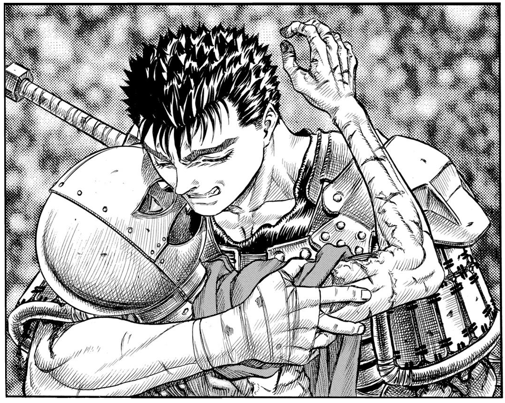During his year-long imprisonment, Griffith is subjected to a myriad of torture methods, ranging from elinguation and tendon laceration to flaying and scalding. During the brief moments in which he is left alone between torture sessions, Griffith lies in the darkness, with only the thoughts of his dream and Guts keeping him alive. He is also confronted by visions of demonic figures – who refer to him as prince and claim to be his kinsmen – seeking an audience with him at the proper place and time.A year later, a rescue team consisting of Guts, Casca, Judeau and Pippin, with the assistance of Charlotte, arrive to break Griffith out of the tower. Griffith wakes to the sight of a grief-stricken Guts. Without hesitation, he feebly attempts to strangle his former comrade before ceasing upon seeing the regret in Guts' eyes.
After the jailer divulges the grisly specifics of Griffith's torture and is murdered by Guts, the group fights its way through a wave of Midland soldiers before escaping underground.In the sewers of Wyndham, they are attacked by a group of Bakiraka; after dispatching four of the assassins and escaping the capital city through the sewers, the Falcons retreat to a nearby farm.The party soon leaves the farm and sets out for the Midland border, only to realize they are being tailed by the Black Dog Knights. One trap after another, the Dogs continue to pursue until the Falcons finally decide to confront them. As the battle ensues and Guts begins to overpower their leader, Wyald, an incapacitated Griffith can only watch from the sidelines, unable to even grasp a sword. When it seems Guts has finally triumphed over Wyald, the beast rises once more and grabs Griffith, unclothing the invalid and exposing the extent of his injuries; he insists the Falcons' hopes of former glory under Griffith's leadership are futile, and henceforth demands Griffith summon the God Hand.
To his dismay, however, he realizes Griffith is no longer in possession of the Crimson Beherit. As a result, Wyald decides to kill the man, but Zodd intervenes and tears the Dog in two, telling Griffith his beherit would soon return to him before flying off.Having reached the Midland border, the Band of the Falcon finally comes to terms with Griffith's injuries, accepting that he will never fight again. When Casca arrives to Griffith's carriage to change his bandages, Griffith forces himself on her, but is met only with her resistance initially, though, she eventually hugs him out of pity. Soon after, Griffith witnesses a tender moment between Guts and Casca, with Casca urging Guts to leave once again if he's truly Griffith's friend.
ec
Eclipse
Beckoned by a vision of his former self to continue on, Griffith musters the strength to commandeer the unattended horse carriage in pursuit of the castle from his dream. The cart eventually crashes into a lake, sending him soaring into the air; in this brief moment of flight, he has another vision of a would-be life with Casca before coming to his senses and landing in the water below. Stripped of all most dear to him, he attempts to puncture his throat on a sharp, protruding tree root to little avail, lashing only a minor gash on his neck. As Griffith sits facing the water, unable to commit, his beherit surfaces from the lakebed. The blood leaking from his neck slowly runs down his arm and comes into contact with the beherit, causing it to animate. The Falcons tailing him draw near, just as a solar eclipse begins and demonic figures approach. Unable to voice caution, Griffith and his comrades are then suddenly transported to another dimension.
As Griffith is assisted up by Guts, the demons reveal they are at the site of the Eclipse. From the depths of the dimension manifest the four members of the God Hand, the tallest of which welcomes the Falcons to the "nocturnal festival", and reveals that Griffith's ascension into their ranks has been preordained by causality. It is then disclosed that Griffith's aforementioned rebirth as a demon of the God Hand will require a sacrifice – one ultimately willed by Griffith himself.
He is then taken to the deepest recesses of his conscious self, wherein he is reminded of his dream and the lengths he once went to realize it. Upon viewing the mound of corpses metaphorically responsible for his rise, he concludes that ceasing the piling of them now would only mean the inane demise of his dream. Coming to terms with who he truly is and realizing Guts was the only one who made him forget his dream, Griffith accepts the consequences of his choice and utters, "I sacrifice," bringing about the branding of all his comrades.
A unilateral slaughter is then initiated, with nearly all of the Falcons being gratuitously murdered as sacrifices for Griffith's ascension. Meanwhile, Griffith becomes incorporeal, metaphysically descending into the depths of the Abyss where he comes to better understand human nature and causality, as well as the ultimate role he is to play in the designs of the supreme being the God Hand serve. After all but Guts and Casca are dead, Griffith, now christened Femto, emerges in his new form as the fifth member of the God Hand. He immediately descends down towards an ensnared Guts and motions a demon to bring Casca to him. Without hesitation, Femto proceeds to rape Casca in front of Guts, intent on forcing the latter to watch. As he finishes with Casca, the Skull Knight encroaches on the Eclipse.[56] Femto uses his newfound powers to form a gravity well of demons around the intruder, but with little success, as the Skull Knight is able to escape the temporal junction unscathed with Guts and Casca in tow. Despite the turn of events, the God Hand hail Femto's birth and conclude the Eclipse by ushering in the Age of Darkness – "An age when every darkness shall eclipse light."
bsa
Black Swordsman Arc
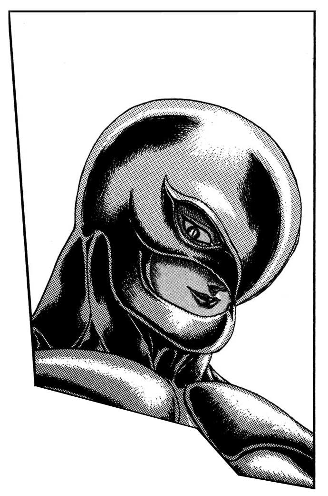As a profound astral entity, Femto is unable to return to the Physical World, only able to manifest within Interstices. When an apostle dubbed "the Count" is fatally wounded by Guts, the God Hand are summoned by the cry of the Count's beherit. Enraged at the mere sight of his former comrade, Guts attacks Femto, but is immediately repelled by Femto's gravity-manipulating powers. With Guts heavily incapacitated, Femto informs the Count that he need only sacrifice his daughter, Theresia, to attain new life. The Count is unable to perform the sacrifice, however, and is thus dragged into the Abyss. In a last ditch effort to wound his nemesis, Guts uses his Cannon Arm to once again attack Femto, that attack too being repelled by the demon. With the Count's demise, the temporal junction point is brought to an end and the God Hand consequently disappears.
ca
Conviction Arc
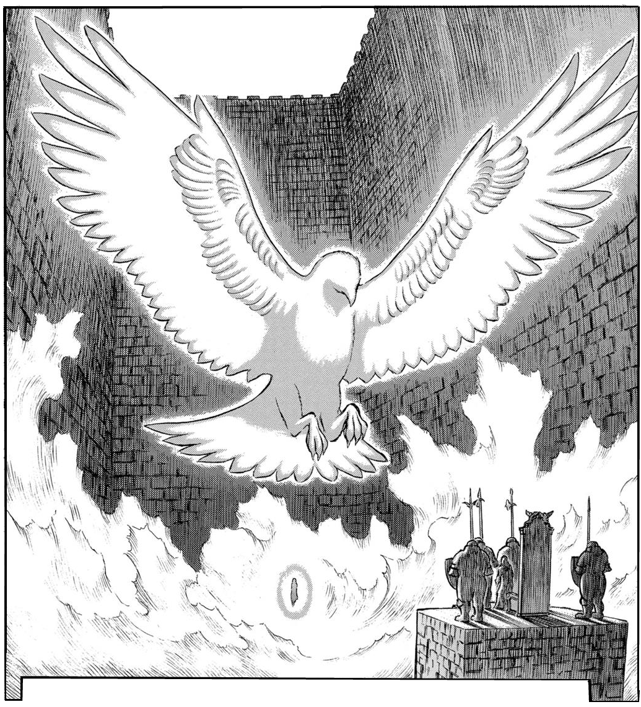Soon after siring an egg-shaped apostle to carry out a special task, the God Hand begins orchestrating a series of events, ranging from a plague to the Kushan invasion of Midland by Emperor Ganishka, all while Midland's maddened king spends his final hours ceaselessly searching for Griffith. The God Hand imparts a dream to the masses of Midland, one prophesying the coming of a savior exalted as the "Falcon of Light". Unbeknownst to the Midland refugees, they are being lead to the Tower of Conviction in the ruined city of Albion to serve in a mass sacrifice, known as the Incarnation Ceremony, that will incarnate Femto in the Physical World as Griffith. As the Falcon of Light, Griffith appears before Zodd in a vision, metaphysically wounding the apostle into servitude and instructing him to travel to Albion.
Prior to the ceremony's initiation, the egg-shaped apostle swallows a dying demon infant while climbing the crumbling Tower of Conviction, where he enacts the Incarnation Ceremony.Atop the tower, the apostle summons the restless spirits of the Albion dead to him, the demon infant's fetal form concurrently being ridden of its deformities and maturing into a physical vessel for Griffith's essence. With the completion of his reincarnation, Griffith emerges from the egg-shaped apostle's body, subsequently killing the demon as the tower is destroyed completely, and making his presence known to all as he bathes in the daybreak sunlight. He is then escorted away by Zodd, to avoid the assault of the Kushan soldiers sent to capture him.
mfa
Millennium Falcon Arc
Reunion on the Hill of Swords
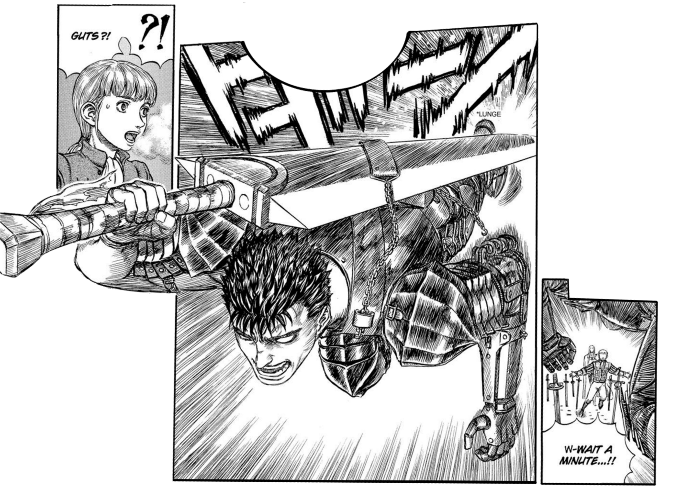Soon after the Incarnation Ceremony, Griffith reunites with Rickert and Guts on the Hill of Swords, where he proclaims that, even in the ocean of his sacrificed comrades' grave markers, he feels nothing. A triggered Guts lunges out at Griffith, but is deflected by Zodd, leading to a fierce battle between the two. Thought to have long been frozen, Griffith experiences the faint throbbing of his heart, deducing the feelings to be those of his infant vessel.
Guts and Zodd's clash results in the destruction of Godot's mine, just as Casca comes running to the scene. As the airborne boulders from Zodd's destructive resurgence come flying Casca's way, Griffith without hesitation clothes her in his cape, protecting her from the falling debris. Immediately afterwards, Griffith orders Zodd to cease his battle and sets off with the beast to bring his dream to fruition. Before leaving, Griffith informs Rickert and Guts nothing has changed, telling the former he is welcome to once again pursue the aforementioned dream, and the latter that he of all people should know the kind of person Griffith has always been.
Liberating Midland
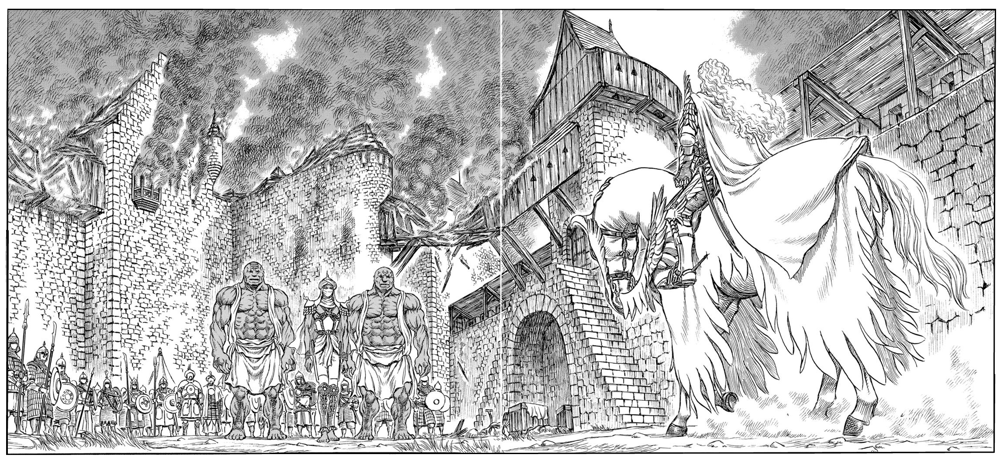Griffith sets out for the western Midland city of Shet, one of many under siege by the Kushan. Appearing in the compound atop a horse, as if from thin air, Griffith approaches the unit's general and kills him with a pierce to his eye. A retaliatory volley of arrows are fired by the Kushan soldiers in Griffith's direction, but are done so in vain, as they all happen to miss their mark. Before a second volley can be fired, Zodd arrives and devastates the unit with a head-on trail of slaughter. The thrust of a stray lance mows down another group of Kushan soldiers, wielded by the Moonlight Knight Locus.
The knight reveals he was sent by the guidance of an oracle, and asks to join Griffith's ranks, to which the latter accedes. As full-scale devastation of the Kushan unit proceeds, Griffith is attacked by two hulk-like Kushans from behind. They are repelled, however, by an exiled Bakiraka named Rakshas. The exile offers his assistance to Griffith, claiming he will let no harm befall Griffith, only so he may decapitate the Falcon himself some day. Suddenly, a naga-armored knight barges through the fortress' gate, and with his scale-covered flamethrower and great hammer, single-handedly plows through a division of Kushan soldiers. Griffith's four troops soon dispatch the entire unit, and afterwards kneel before him in a pledge of allegiance.
Defense of Vritannis
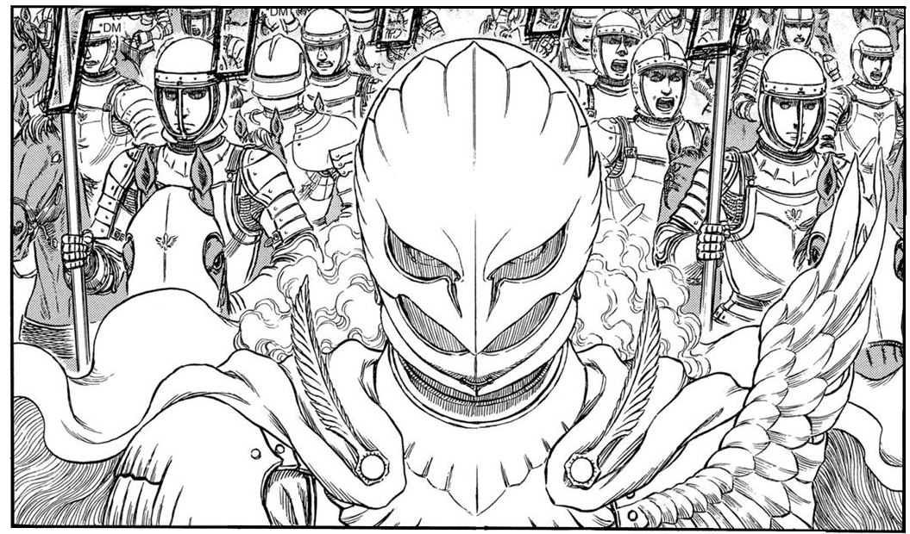Griffith and his reborn Band of the Falcon continue liberating areas in Midland under Kushan occupation and even manage rescue Princess Charlotte from the clutches of Emperor Ganishka. At some point following the rescue of the princess, Griffith sends Sonia and Mule Wolflame to retrieve His Holiness the pontiff and pass on a message: "If you would grasp destiny in your hand, follow the guidance of the feathers of light."
The Kushan Imperial Army eventually mounts an attack on the holy port city of Vritannis, drastically overwhelming the Holy See Alliance forces. The Band of the Falcon joins the fray just as all seems lost, handily stifling the siege and downsizing the Kushan army. Griffith makes his way into Ganishka's mobile palace, where he brings the emperor to heel and agrees to have their final showdown in Wyndham, thus forcing the emperor to withdraw his forces.
Meeting with prominent Holy See Alliance officials after the successful defense, Charlotte formally announces her and Griffith's engagement, and confers to her fiancé the title of Supreme Commander of the Midland Regular Army. Federico de Vandimion refutes Midland's claim of hegemony over Holy See forces that should step foot on its kingdom's soil, positing that an alliance between Midland and other Holy See nations in the pontiff's name would be of greater good. The pontiff himself thereupon arrives, verifying Griffith's role as the prophesied Falcon of Light, and pledging allegiance to him.
End of Worldly Reason
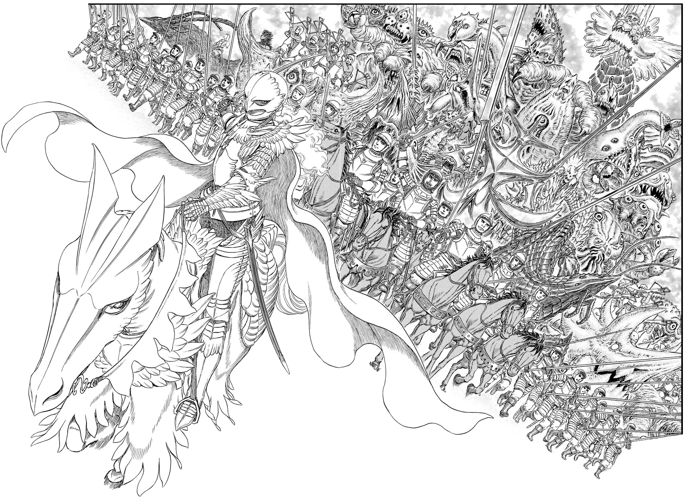Forced to withdraw from Vritannis after being overwhelmed by Griffith, a vexed Ganishka lowers himself into a Man-Made Beherit in order to transcend apostlehood. In his mist form, he sacrifices all monsters and Kushan present in his demon city of Wyndham. Consequently, Ganishka is twice reincarnated as an immense, eldritch abomination. Griffith has his forces fight off the emperor's familiars as he rides Zodd to Ganishka's head to confront the turbulent apostle-emperor.
Manifesting his true form, Femto nears Ganishka, but is ambushed by the Skull Knight, who attempts to strike him down from behind with the Beherit Sword. However, Femto reveals he has anticipated the Skull Knight's appearance, and distorts space to redirect the space-cleaving sword stroke at Ganshika. This causes a chain reaction with Ganishka's twice reincarnated form, triggering the Great Roar of the Astral World, and bringing about the merging of the physical and astral realms into one global Interstice– Fantasia. Flying down back in his Falcon of Light form atop Zodd, Griffith ushers his followers towards his newly risen capital city, Falconia.
fa
Fantasia Arc
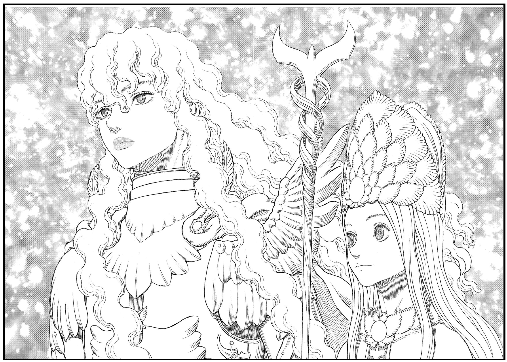Upon learning of Rickert's arrival to Falconia, Griffith welcomes the youth to his palace, where he asks if Rickert still shares his dream. Rickert – torn between the miracles and atrocities brought forth by his former commander – in turn slaps Griffith. While Rickert admits he can never truly bear hate for his former commander, he tells Griffith he is a follower of the White Falcon he once knew, and of the original Band of the Falcon, and that the Falcon of Light before him is not his leader. Griffith prevents his guards from attacking his former comrade, allowing Rickert to leave the palace while reassuring those present that the altercation was a simple rejection.
Griffith and the Band of the Falcon go about reclaiming Midland lands lost to the influx of astral beings in Fantasia. Around the same time, Griffith reveals to council members of Falconia his intentions for Midland and humanity: To give rise to an expansive territory for humanity – a "second empire" succeeding Gaiseric's empire of yore. During a following full moon night, Griffith notices that some strands in a tress of his hair seemingly bear a darker hue. Anticipating the recurrence of some phenomenon particular to this night, he vanishes into the night sky shortly afterwards.